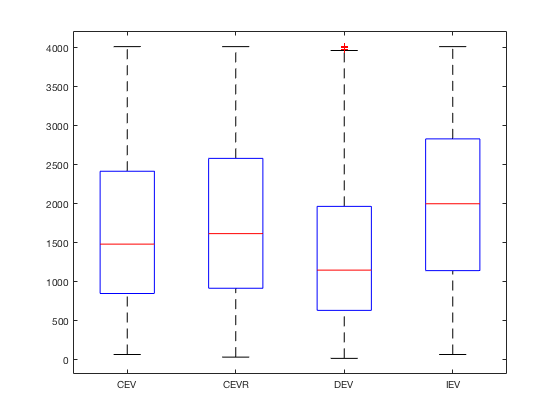

Contents
Mixed-effects analyses of sceptic RT data
% data read cd('/Users/localadmin/Google Drive/skinner/projects_analyses/SCEPTIC/model_free_analyses'); load gold; % define categorical variables % gold = scepticfmribehaviorNov2016; gold.subject = categorical(gold.subject); gold.LunaID = categorical(gold.LunaID); gold.omission = categorical(gold.omission); gold.omissionlag = categorical(gold.omissionlag); gold.rewFunc = categorical(gold.rewFunc); gold.emotion = categorical(gold.emotion);
sanity check #1: inspect fields
gold(1:2,:)
ans =
subject run trial LunaID entropy rtvmax vchosen vmax rtumax umax pemax rewFunc emotion magnitude probability score ev rt bestRewRT bestEVRT image trial_abs timestep entropyH entropyFixed timesteplag timestepchange timestepchangelag abstschange abstschangelag abstschangelag2 abstschangelag3 abstschangelag4 vdev vdevlag rtvmaxlag udev udevlag rtumaxlag absvdevlag evdev evdevlag omission omissionlag entropylag entropyHlag entropyFlag wizentropy wizabstschange distfromedge distfromedgelag rtlag
_______ ___ _____ ______ _______ ______ ________ ______ ______ ______ ______ _______ _______ _________ ___________ _____ ______ ____ _________ ________ _____ _________ ________ ________ ____________ ___________ ______________ _________________ ___________ ______________ _______________ _______________ _______________ ____ _______ _________ ____ _______ _________ __________ ______ ________ ________ ___________ __________ ___________ ___________ __________ ______________ ____________ _______________ _____
1 1 1 10637 NaN NaN 0 NaN NaN NaN 10.693 IEV fear 28 0.86485 28 24.221 1051 1051 1051 11 1 11 0 0 NaN NaN NaN NaN NaN NaN NaN NaN NaN NaN NaN NaN NaN NaN NaN NaN NaN Reward NA NaN NaN NaN NaN NaN 11 NaN NaN
1 1 2 10637 0.32202 11 8.98e-11 9.9793 30 2521.9 21.675 IEV fear 58 0.68726 58 39.879 2451 2451 2451 8 2 25 0 0 11 12 NaN 12 NaN NaN NaN NaN 14 NaN NaN -5 NaN NaN NaN 9.9793 NaN Reward Reward NaN 0 0 -2.8176 0.57445 15 11 1051
sanity check #2: inspect rt distributions by condition
scatterhist(gold.trial,gold.rt,'group',gold.rewFunc);figure(gcf)
figure(1); clf; boxplot(gold.rt,gold.rewFunc); % % % % fit basic LM: % lm_group = fitlm(gold,'rt ~ 1 + trial + subject + trial:subject + rewFunc + rewFunc:trial'); % % % fit basic LME: % lme_group = fitlme(gold,'rt ~ 1 + rewFunc + trial + rewFunc:trial + (1 + rewFunc|subject) ');
explain RT in terms of reinforcement:
only intercept as random effect
lme_group_oneway = fitlme(gold,'rt ~ 1 + rtvmaxlag + trial + rtlag + rtvmaxlag:trial + rtumaxlag + rtumaxlag:trial + (1|subject)')
lme_group_oneway =
Linear mixed-effects model fit by ML
Model information:
Number of observations 29603
Fixed effects coefficients 7
Random effects coefficients 76
Covariance parameters 2
Formula:
rt ~ 1 + rtlag + trial*rtvmaxlag + trial*rtumaxlag + (1 | subject)
Model fit statistics:
AIC BIC LogLikelihood Deviance
4.7826e+05 4.7833e+05 -2.3912e+05 4.7824e+05
Fixed effects coefficients (95% CIs):
Name Estimate SE tStat DF
'(Intercept)' 701.19 44.184 15.87 29596
'trial' 1.9158 1.2978 1.4762 29596
'rtvmaxlag' 19.532 1.1196 17.445 29596
'rtumaxlag' 4.0274 1.1484 3.5071 29596
'rtlag' 0.35763 0.0057042 62.696 29596
'trial:rtvmaxlag' 0.17109 0.036161 4.7314 29596
'trial:rtumaxlag' -0.20743 0.036667 -5.6572 29596
pValue Lower Upper
1.7595e-56 614.58 787.79
0.1399 -0.62794 4.4595
8.184e-68 17.337 21.726
0.00045371 1.7766 6.2783
0 0.34645 0.36881
2.2398e-06 0.10022 0.24197
1.5531e-08 -0.2793 -0.13556
Random effects covariance parameters (95% CIs):
Group: subject (76 Levels)
Name1 Name2 Type Estimate Lower
'(Intercept)' '(Intercept)' 'std' 159.48 134.18
Upper
189.55
Group: Error
Name Estimate Lower Upper
'Res Std' 776.64 770.4 782.93
all "meta-learning parameters" as random effects:
lme_group = fitlme(gold,'rt ~ 1 + rtvmaxlag + trial + rtlag + rtvmaxlag:trial + rtumaxlag + rtumaxlag:trial + (1|subject) + (1+rtvmaxlag| subject) + (1+trial|subject) + (1+rtvmaxlag:trial|subject) + (1+rtumaxlag |subject) + (1+rtumaxlag:trial |subject)')
lme_group =
Linear mixed-effects model fit by ML
Model information:
Number of observations 29603
Fixed effects coefficients 7
Random effects coefficients 836
Covariance parameters 17
Formula:
Linear Mixed Formula with 5 predictors.
Model fit statistics:
AIC BIC LogLikelihood Deviance
4.7764e+05 4.7783e+05 -2.3879e+05 4.7759e+05
Fixed effects coefficients (95% CIs):
Name Estimate SE tStat DF
'(Intercept)' 686.05 60.424 11.354 29596
'trial' 1.9155 1.3419 1.4275 29596
'rtvmaxlag' 19.009 2.0673 9.1952 29596
'rtumaxlag' 7.4795 1.2305 6.0786 29596
'rtlag' 0.32178 0.0057742 55.727 29596
'trial:rtvmaxlag' 0.25384 0.037567 6.7571 29596
'trial:rtumaxlag' -0.27171 0.038226 -7.1079 29596
pValue Lower Upper
8.1595e-30 567.62 804.49
0.15346 -0.71467 4.5457
3.9806e-20 14.957 23.061
1.2274e-09 5.0677 9.8912
0 0.31046 0.33309
1.4343e-11 0.18021 0.32748
1.2045e-12 -0.34663 -0.19678
Random effects covariance parameters (95% CIs):
Group: subject (76 Levels)
Name1 Name2 Type Estimate Lower
'(Intercept)' '(Intercept)' 'std' 22.069 NaN
Upper
NaN
Group: subject (76 Levels)
Name1 Name2 Type Estimate Lower
'(Intercept)' '(Intercept)' 'std' 298.48 242.66
'rtvmaxlag' '(Intercept)' 'corr' -0.99998 NaN
'rtvmaxlag' 'rtvmaxlag' 'std' 14.702 12.235
Upper
367.13
NaN
17.666
Group: subject (76 Levels)
Name1 Name2 Type Estimate Lower
'(Intercept)' '(Intercept)' 'std' 164.71 NaN
'trial' '(Intercept)' 'corr' -0.99986 NaN
'trial' 'trial' 'std' 2.3592 1.0052
Upper
NaN
NaN
5.537
Group: subject (76 Levels)
Name1 Name2 Type Estimate
'(Intercept)' '(Intercept)' 'std' 83.243
'trial:rtvmaxlag' '(Intercept)' 'corr' -0.41746
'trial:rtvmaxlag' 'trial:rtvmaxlag' 'std' 0.05351
Lower Upper
NaN NaN
NaN NaN
NaN NaN
Group: subject (76 Levels)
Name1 Name2 Type Estimate Lower
'(Intercept)' '(Intercept)' 'std' 107.35 NaN
'rtumaxlag' '(Intercept)' 'corr' -0.99988 NaN
'rtumaxlag' 'rtumaxlag' 'std' 2.9229 NaN
Upper
NaN
NaN
NaN
Group: subject (76 Levels)
Name1 Name2 Type Estimate
'(Intercept)' '(Intercept)' 'std' 119.32
'trial:rtumaxlag' '(Intercept)' 'corr' -1
'trial:rtumaxlag' 'trial:rtumaxlag' 'std' 0.064489
Lower Upper
NaN NaN
NaN NaN
0.019365 0.21476
Group: Error
Name Estimate Lower Upper
'Res Std' 765 758.82 771.23
compare models
compare(lme_group_oneway, lme_group);